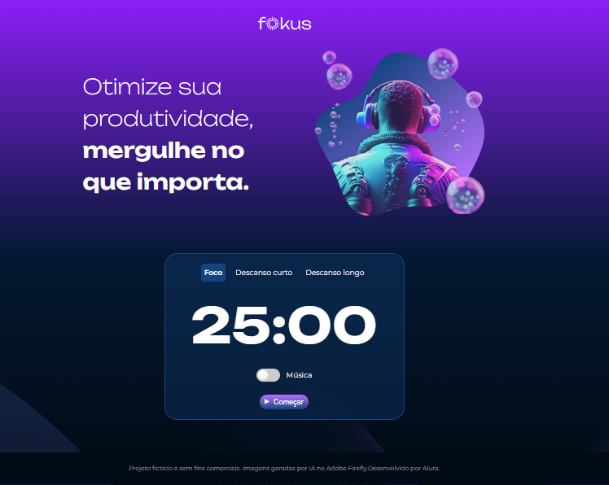
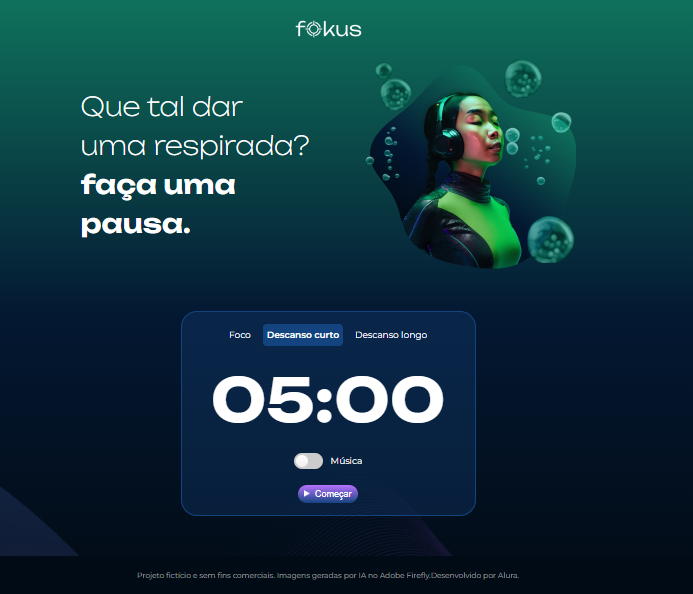
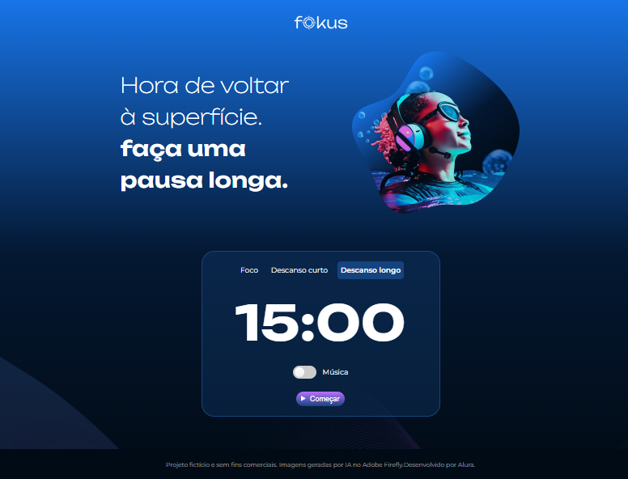
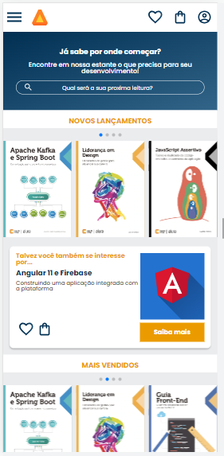
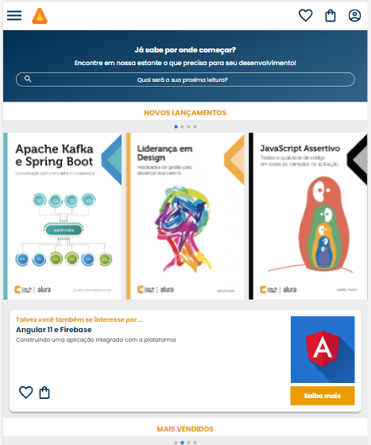
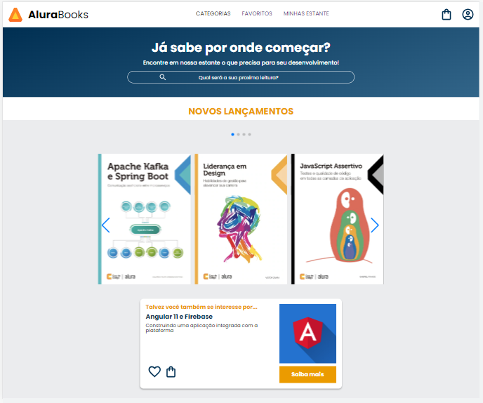

Portfólio
Agosto de 2023 decidi procurar alguns cursos para aprofundar na area do frontend e depois futuramente aprofundar no backend e ver como os dois se interagem.
-
Projeto fokus:
  Esse projeto é um temporizador com contagem regressiva com tres botões cada um com o seu tempo. Com o javascript foi implementado para mudar a imagem da tela e o temporizador quando clicar no botão: foco, descanso curto ou descanso longo.
-
Alurabooks:
  Esse projeto foi desenvolvido mobile-first na alura. Começa desenvolvendo pelo mobile e vai crescendo a tela até chegar aos desktops.
-
Outros:
Existe outros projetos que no qual aprendo atraves de cursos, ultimamente nos da Alura que no qual vou salvando no meu github.
Link para os repostirorios no Github.